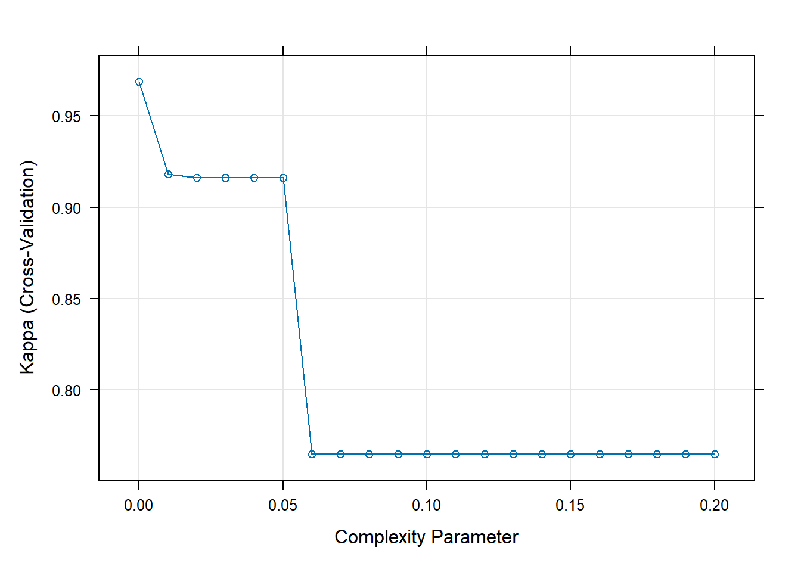
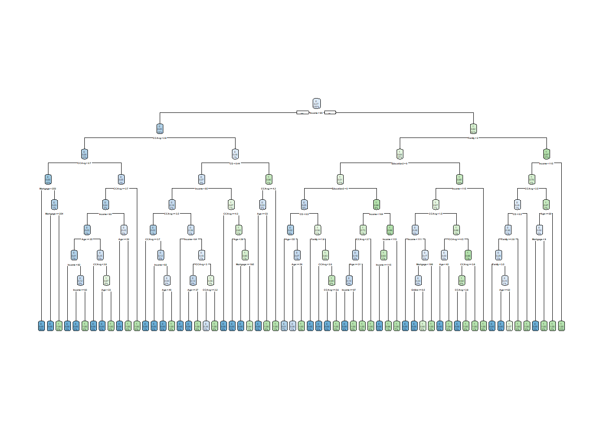
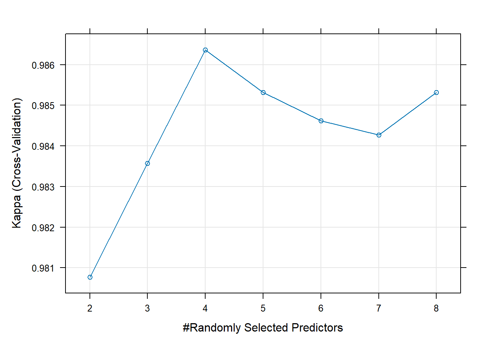
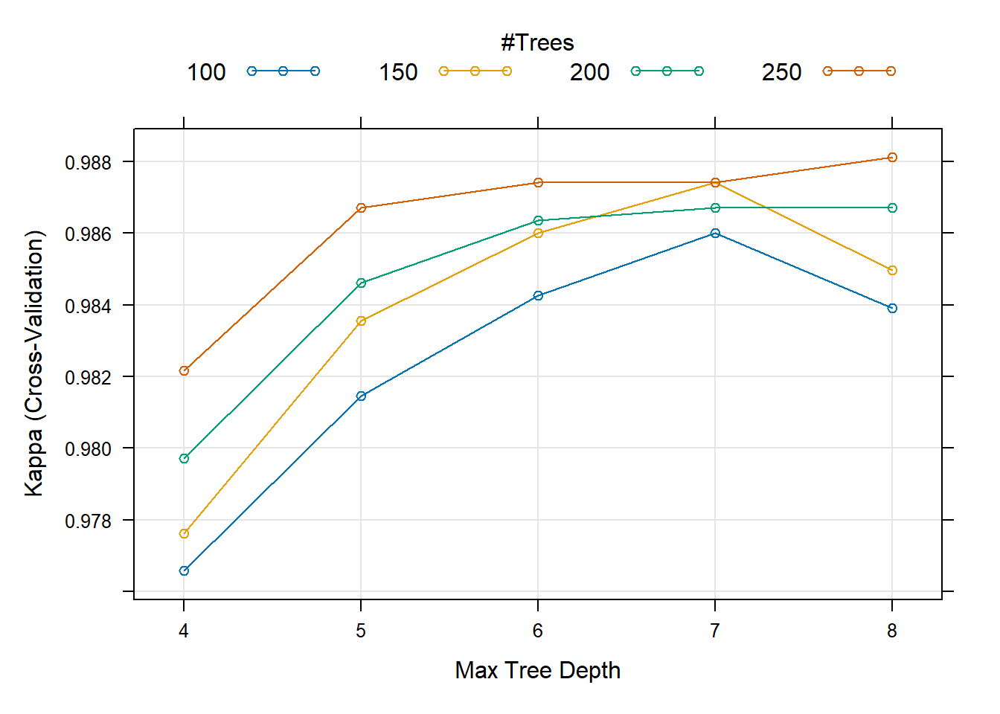
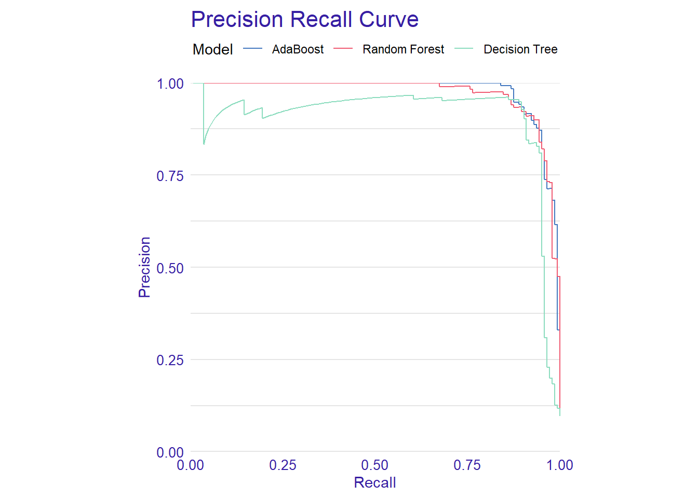
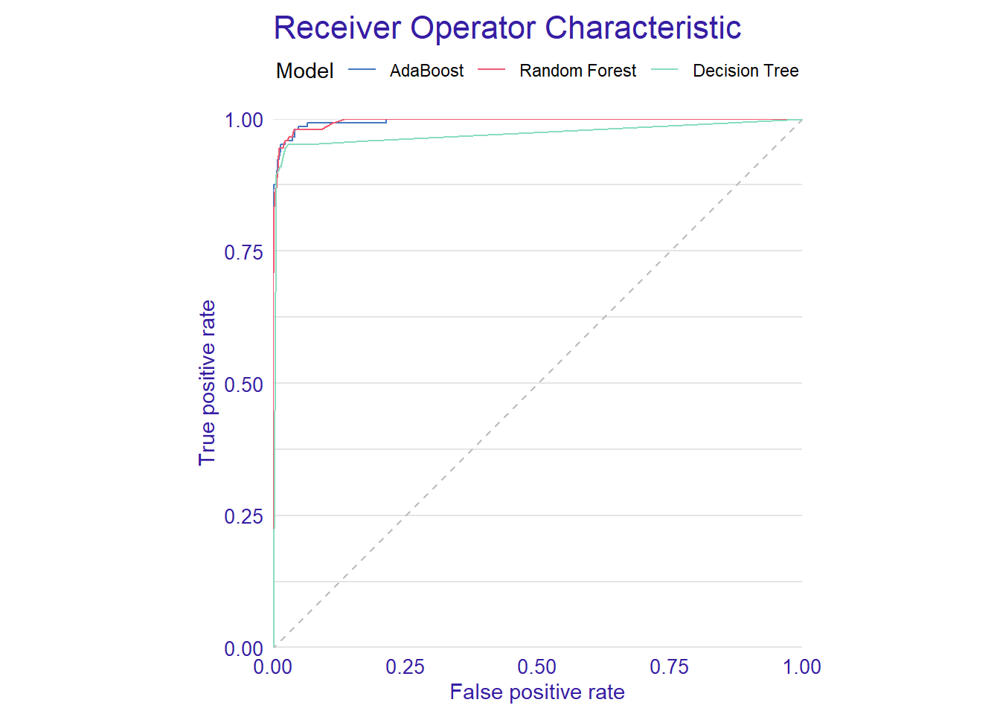

rm(list = ls())
library(tidyverse)
library(caret)
library(performanceEstimation)
library(PRROC)
library(rpart)
library(rpart.plot)Problem Set 6
# Read in data and remove unneccessary features
bank = read_csv("UniversalBank.csv") %>%
select(-ID, -`ZIP Code`, -Experience) %>%
rename(Loan = `Personal Loan`,
Securities = `Securities Account`,
CD = `CD Account`) %>%
mutate(Loan = factor(Loan)) %>%
mutate_at(vars(Education), .funs = factor)Hint: Notice the use of the
rename()function above. I rename variables, especially those that have spaces in them. When specifying a variable named “Personal Loan”, you’d have to type `Personal Loan`. Notice the backticks! Lots of programs assume you don’t have spaces or illegal characters in your data. So this is all part of the important data cleaning and prepping process.
Below we can check for missing data.
# MISSING DATA
# =============
# Calculate percent of missing values for features
missing_df = as.numeric(purrr::map(bank, ~mean(is.na(.))))*100
# Assign values to data frame for easy viewing
df = data.frame(PercentMissing = missing_df,
row.names = names(bank)) %>%
arrange(desc(PercentMissing))
print(df) PercentMissing
Age 0
Income 0
Family 0
CCAvg 0
Education 0
Mortgage 0
Loan 0
Securities 0
CD 0
Online 0
CreditCard 0Fortunately, we don’t have any missing values.
Partition Data
# Partition the Data
set.seed(453)
idx = createDataPartition(bank$Loan, p = 0.7, list = FALSE)
train = bank[idx, ]
test = bank[-idx, ]
rm(idx)Address Class Imbalance
# Address class imbalance
table(train$Loan)
0 1
3164 336 balanced_train = smote(Loan ~ .,
data = train,
perc.over = 7,
perc.under = 1.3)
table(balanced_train$Loan)
0 1
3057 2688 Best Tuned Decision Tree
The code below will run into errors on the caret side (rpart will be fine) if you don’t change the variable names to have no spaces. The cross-validation process in the caret package does its work with that assumption, so we needed to rename variables as we did above.
# training and evaluation process
ctrl = caret::trainControl(method = "cv", number = 5)
set.seed(345)
tree = train(Loan ~ .,
data = balanced_train,
method = "rpart",
metric = "Kappa",
trControl = ctrl,
tuneGrid = expand.grid(cp = seq(0.0, 0.2, 0.01)),
control = rpart.control(minsplit = 1, minbucket = 1, maxdepth = 8)
)
plot(tree)
rpart.plot(tree$finalModel)
Best Tuned Random Forest
set.seed(345)
forest = train(Loan ~ .,
data = balanced_train,
method = "rf",
metric = "Kappa",
trControl = ctrl,
ntree = 50,
tuneGrid = expand.grid(.mtry = seq(2,8,1))
)
plot(forest)
Best Tuned Boosting (Adaboost / Gradient Boosting)
boost_grid = expand.grid(
maxdepth = c(4, 5, 6, 7, 8),
iter = c(100, 150, 200, 250),
nu = 0.1
)
boost_ctrl = trainControl(method = "cv",
number = 5,
allowParallel = TRUE)
set.seed(345)
boosted_trees = train(Loan ~ .,
data = balanced_train,
trControl = boost_ctrl,
tuneGrid = boost_grid,
method = "ada",
metric = "Kappa")plot(boosted_trees)
Compare Precision and Sensitivity
# Convert Y in test data to numeric 0, 1.
test = mutate(test, Loan = as.numeric(ifelse(Loan=="1", 1, 0)))
# Create explainers
tree_explain = DALEX::explain(tree,
data = test,
y = test$Loan,
type = "classification",
label = "Decision Tree")Preparation of a new explainer is initiated
-> model label : Decision Tree
-> data : 1500 rows 11 cols
-> data : tibble converted into a data.frame
-> target variable : 1500 values
-> predict function : yhat.train will be used ( default )
-> predicted values : No value for predict function target column. ( default )
-> model_info : package caret , ver. 6.0.94 , task classification ( default )
-> model_info : type set to classification
-> predicted values : numerical, min = 0 , mean = 0.1111292 , max = 1
-> residual function : difference between y and yhat ( default )
-> residuals : numerical, min = -1 , mean = -0.01512918 , max = 1
A new explainer has been created! forest_explain = DALEX::explain(forest,
data = test,
y = test$Loan,
type = "classification",
label = "Random Forest")Preparation of a new explainer is initiated
-> model label : Random Forest
-> data : 1500 rows 11 cols
-> data : tibble converted into a data.frame
-> target variable : 1500 values
-> predict function : yhat.train will be used ( default )
-> predicted values : No value for predict function target column. ( default )
-> model_info : package caret , ver. 6.0.94 , task classification ( default )
-> model_info : type set to classification
-> predicted values : numerical, min = 0 , mean = 0.1162933 , max = 1
-> residual function : difference between y and yhat ( default )
-> residuals : numerical, min = -0.94 , mean = -0.02029333 , max = 0.94
A new explainer has been created! adaboost_explain = DALEX::explain(boosted_trees,
data = test,
y = test$Loan,
type = "classification",
label = "AdaBoost")Preparation of a new explainer is initiated
-> model label : AdaBoost
-> data : 1500 rows 11 cols
-> data : tibble converted into a data.frame
-> target variable : 1500 values
-> predict function : yhat.train will be used ( default )
-> predicted values : No value for predict function target column. ( default )
-> model_info : package caret , ver. 6.0.94 , task classification ( default )
-> model_info : type set to classification
-> predicted values : numerical, min = 2.53305e-14 , mean = 0.09842477 , max = 1
-> residual function : difference between y and yhat ( default )
-> residuals : numerical, min = -0.9999998 , mean = -0.00242477 , max = 1
A new explainer has been created! # Model Performance
tree_perf = DALEX::model_performance(tree_explain)
forest_perf = DALEX::model_performance(forest_explain)
adaboost_perf = DALEX::model_performance(adaboost_explain)
# Plot the Precision Recall Curve
plot(tree_perf, forest_perf, adaboost_perf, geom = 'prc')
For the Adaboost Model the recall is 0.924. The precision is 0.905.
For the Random Forest the recall is 0.944. The precision is 0.872.
For the Decision Tree the recall is 0.944. The precision is 0.819.
Adaboost has the highest precision (0.905).
Random Forest and Decision Tree have the same recall (0.944).
Random Forest has the second-highest precision (0.872).
Decision Tree has the lowest precision (0.819).
ROC Plot and Comparing AUC
# Plot the ROC
plot(tree_perf, forest_perf, adaboost_perf, geom = 'roc')
# Compare the AUCs
matrix(c("Model",
"Decision Tree",
"Random Forest",
"Adaboost",
"AUC",
round(tree_perf$measures$auc,3),
round(forest_perf$measures$auc, 3),
round(adaboost_perf$measures$auc, 3)),
ncol = 2) [,1] [,2]
[1,] "Model" "AUC"
[2,] "Decision Tree" "0.971"
[3,] "Random Forest" "0.996"
[4,] "Adaboost" "0.996"Which has the greatest AUC?
The model with the greatest Area Under the Curve is a tie between the “Random Forest” model and the “Adaboost” model. They both have an AUC of 0.996. The model with the least AUC is the “Decision Tree” model. The “Decision Tree” model has an AUC of 0.971.
AUC (Area Under the Curve), is a metric used to evaluate the performance of a classification model. It measures the ability to tell apart between the two classes either positively or negatively. In short, the AUC shows how well the model separates the positive and negative examples. The AUC is always a value between 0 and 1. A value of 0.5 shows that the model’s predictions are no better than random, 1 suggests complete separation. Hence, a model with an AUC of .996 is better at distinguishing between positive and Negative cases than a model with an AUC of 0.971. Although, All three models we have showcased tell apart the two classes well.
Importance Of Data Partitioning for Managers:
Data partitioning is a key aspect of data analysis along with machine learning. It shows lasting results for decision making, risk management and allocation of resources such as time, labor, and finances. For managers, being able to understand the emphasis on data partitioning is key because it effects the quality and accuracy of predictions gained from data.
Data partitioning is when one divides a dataset into specific subsets. These subsets are normally training sets, testing sets and validation sets. Training sets let you build models that learn from historical patterns and relationships from the data. Testing sets lets you evaluate the model’s performance on unseen data, which positively impacts it’s real world applicability. The validation set is used to optimize model parameters and also to prevent over-fitting.
Data partitioning can also help with risk management. A manager can lessen the impact of data anomalies, errors and bias’s from the initial data. This is a key aspect of the decision making process based off of these predictive models. Comprehending the power of data partitioning stregthens managers to make intelligent choices about decision making, risk management and allocation of resources such as time, labor, and finances.
How Bagging and Ensemble models improve model accuracy and performance.
Managers looking to increase model accuracy and performance need to consider bagging and ensemble techniques as tools to achieve their goal. Bagging (Bootstrap Aggregating, and ensemble models are key aspects for emphasizing the accuracy and diversity of predictive models.
Bagging is when one creates multiple copies of the same original model where each copy is trained on a different subset of the data. This reduces the variance of the model by averaging the predictions from each original model. For managers, they should know that bagging leads to more accurate and sound predictions.
Ensemble models combine predictions from various original models such as Random Forest’s , Decision tree’s and Adaboost’s. Ensemble methods use the knowledge of the individuals in the dataset’s, relying on the strengths of individual models while lessening their weaknesses. For managers, one can have superior performance by using diverse models, which also reduces bias and error.
By using bagging and ensemble models with their machine learning strategies one can make more accurate predictions. Simply, this results in better decision making by managers. Managers that have the ability to understand this will be able to allocate resources more effectively, have higher quality insights and guarantee that their company is making data driven decisions that will result in real-world benefits.